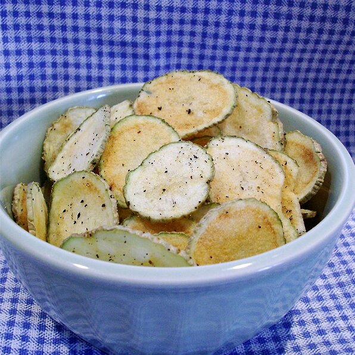

Potato Chips

Description
A potato chip (often just chip, or crisp in British and Irish English) is
a thin slice of potato that has been either deep fried or baked until
crunchy. They are commonly served as a snack, side dish, or appetizer. The
basic chips are cooked and salted; additional varieties are manufactured
using various flavorings and ingredients including herbs, spices, cheeses,
other natural flavors, artificial flavors, and additives.
Ingridients
- 1 tablespoon vegetable oil
- 1 potato, sliced paper thin(peel optional)
- 1/2 teaspoon salt, or to your taste
Steps
-
Pour the vegetable oil into a plastic bag. Add the potato slices, and
shake to coat.
-
Coat a large dinner plate lightly with oil or coooking spray. Arrange
potato slices in a single layer of dish.
-
Cook in the microwave for 3 to 5 minutes, or until lightly browned (if
not browned, they will not be crispy). Times will vary depending on the
power of your microwave. Remove chips from plate, and toss with salt (or
other seasonings). Let cool. Repeat process with the remaining potato
slices. You will not need to keep oiling the plate.